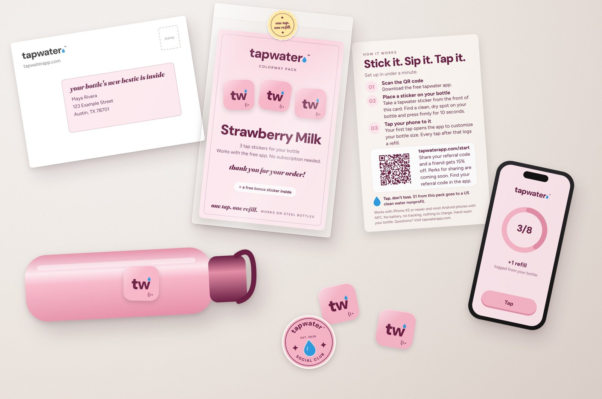
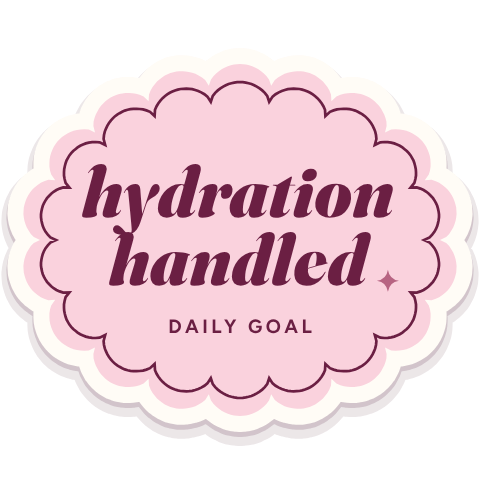
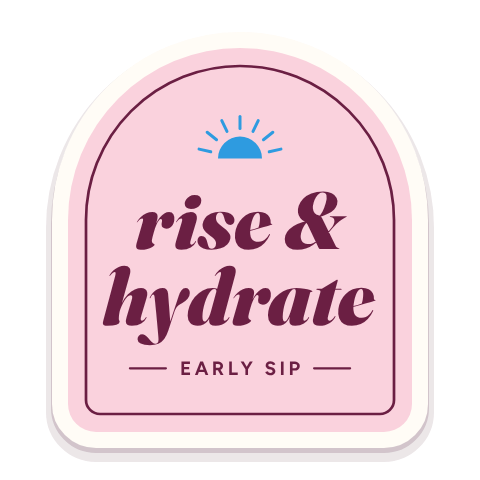
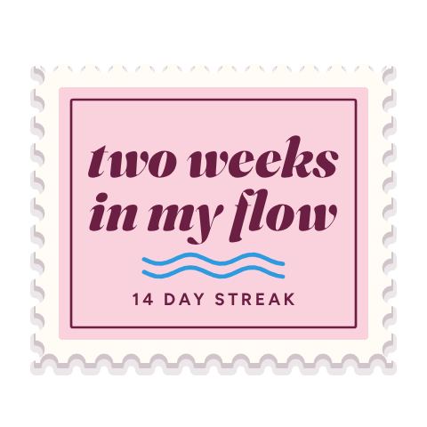
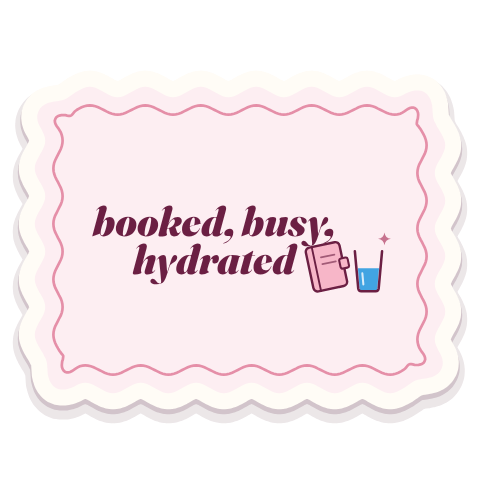
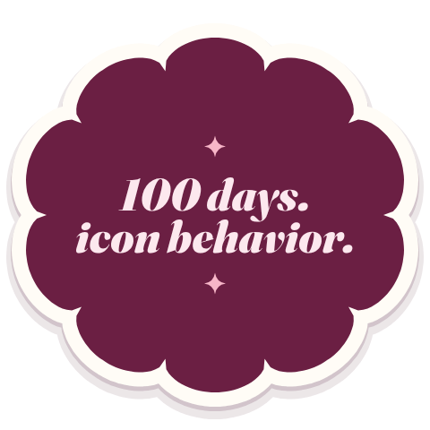
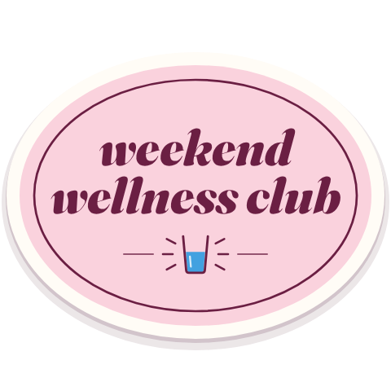
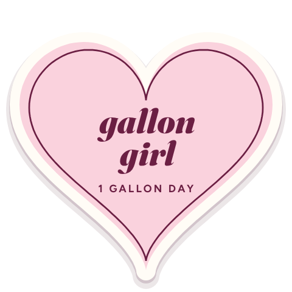
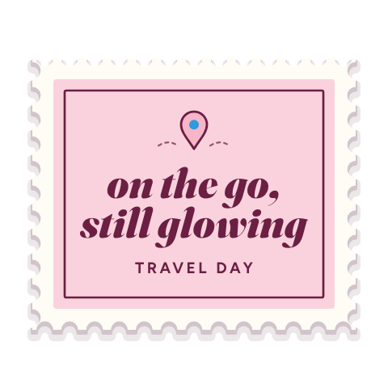

The water tracker for people on the go.
tapwater makes staying hydrated easier than ever. One tap logs a glass: tap the app, tap a reminder, or tap your phone on the sticker on your bottle.
Match your bottle: Strawberry Milk
One tap. One refill.
Three ways to log, all faster than unlocking your phone and typing.
Tap the app
One big button. A ring fills as you drink.
Tap a reminder
Press "+1 refill" right on the notification.
Tap your bottle
Hold your phone to the sticker on your bottle. Done.
- Home screen widget
- Evening catch-up
- No account needed
- No ads
The sticker that logs your water
Glossy, waterproof NFC stickers made to work on metal bottles like Owala and Stanley. Stick one on, set it up once, then tap your phone to it whenever you drink.
Works with the free tapwater app. No subscription needed.

Give 15%, get a free sticker
Share your code from the app. Your friend gets 15% off their first pack, and you get a free bonus sticker in your next order.
Made to match your bottle
Pick the colorway that goes with your bottle. Each one has a Night version for after dark.
Reminders in your tone
Cheeky, Sweet or Simple, at the times that suit your day.
Gentle mode
Fewer reminders, quiet hours, and rest days that don't break your streak. No guilt anywhere.
A sticker for every little win
Hit your goal, keep a streak, drink a gallon on a busy day: each one earns a sticker for the My Bottle sticker book. Over 40 to collect, in your colorway.








Little wins that keep you tapping
- Streaks
- Keep it going and share a cute streak card.
- My Bottle sticker book
- Earn stickers for goals, weekly challenges and milestones, and stick them on your virtual bottle.
- 50 States
- Collect a sticker for every state you drink water in. Optional, and only the state is saved.
- Friends and cheers
- Swap six-letter codes to add friends, share your day if you like, and send a cheer when they need one.
Your water, your aesthetic.
tapwater Extras unlocks every colorway, bows and charms for your bottle, your Sip Squad's daily progress, feel insights and your Year in Water.
See everything in Extrasthen $1.99/month or $12.99/year
Tracking, reminders, bottle stickers and streaks are always free. No subscription needed.
Tap, don't toss
Every 16.9 oz you log counts as a plastic bottle skipped, and the app keeps a running count. $1 from every sticker pack goes to a US clean water nonprofit. See our giving record.